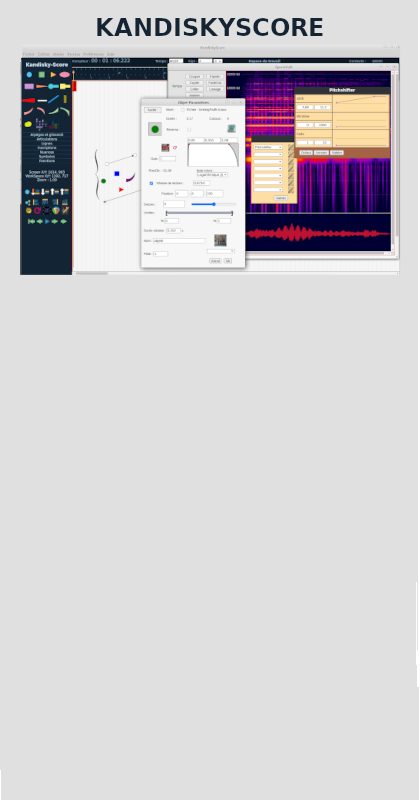

Kandiskyscore repose sur une nouvelle manière d'aborder la composition électroacoustique au travers de la manipulation d'objets symboliques qu'il est possible de combiner pour former des assemblages complexes. Cela permet d'aborder l'écriture des œuvres éléctroacoustiques en vue de la réalisation de partitions.
https://github.com/dblanchemain/kandiskyScore Latest.
This Architecture section is free software; you can redistribute it and/or modify it under the terms of the GNU General Public License as published by the Free Software Foundation; either version 3 of the License, or (at your option) any later version.
This program is distributed in the hope that it will be useful, but WITHOUT ANY WARRANTY; without even the implied warranty of MERCHANTABILITY or FITNESS FOR A PARTICULAR PURPOSE. See the GNU General Public License for more details.
You should have received a copy of the GNU General Public License along with this program; If not, see http://www.gnu.org/licenses.